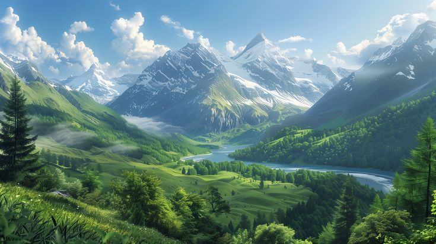

Save the Earth: A Green Future
Watch the Video
The Earth Needs Help: How Pollution is Taking Over
Recycling helps reduce waste and pollution, turning old materials into new products to conserve natural resources.
Renewable energy sources like solar and wind reduce reliance on fossil fuels and help combat climate change.
Trees absorb carbon dioxide, provide oxygen, and support biodiversity, helping to heal the planet.
Important Facts about Earth
The Earth is the only planet known to support life.
More than 70% of the Earth's surface is covered in water.

The average temperature of the Earth is around 15°C (59°F).
Current State of Earth's Pollution
Pollution is at a critical level globally, with plastic waste in oceans, air pollution in cities, and deforestation reducing the green cover.
How Long Can Earth Survive?
Before Website's Initiation
Earth could survive for a few decades at best, with increased pollution leading to more natural disasters, species extinction, and unsustainable living conditions.
After Website's Initiation
If everyone participates in the cause, there is hope for a better, greener Earth. Cutting pollution, recycling, and planting trees can help reverse some of the damage.